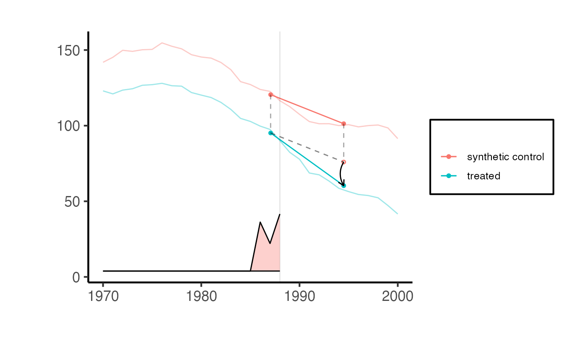
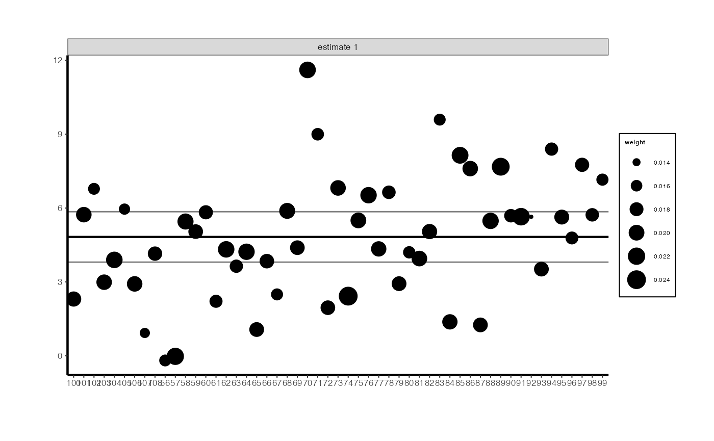
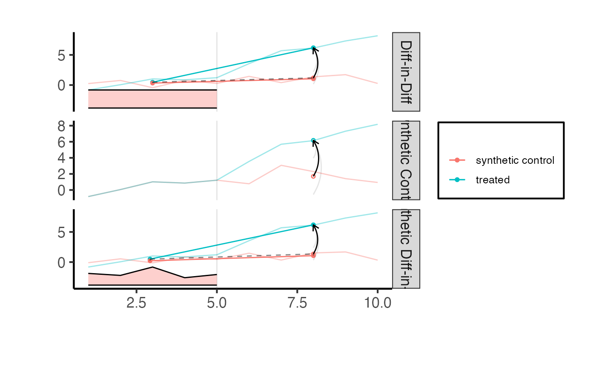
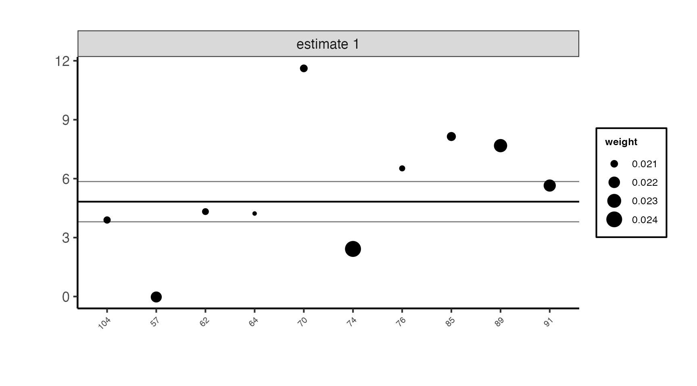
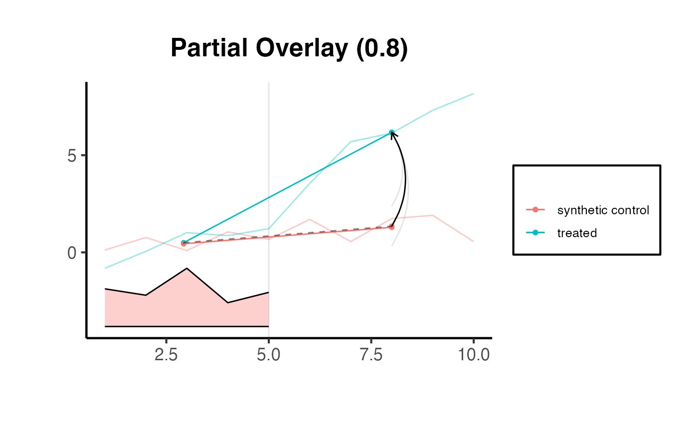
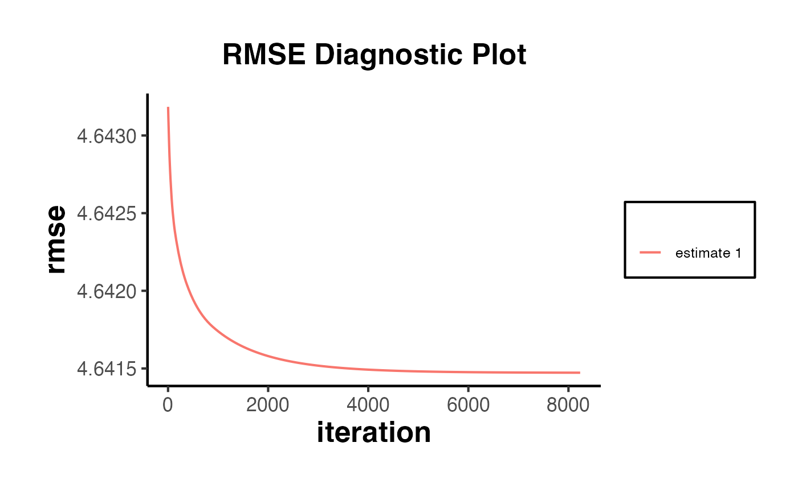
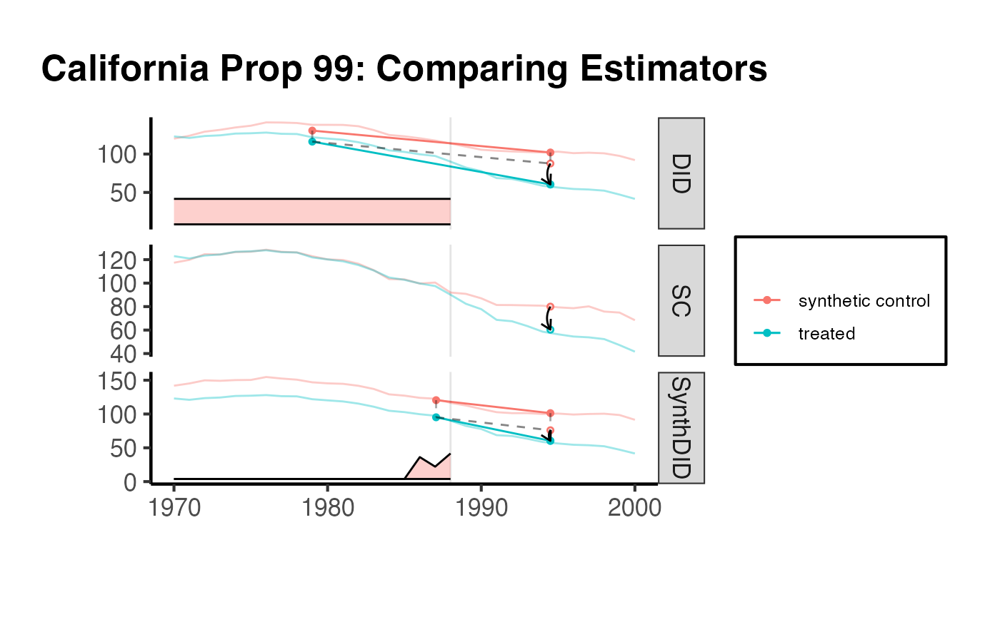
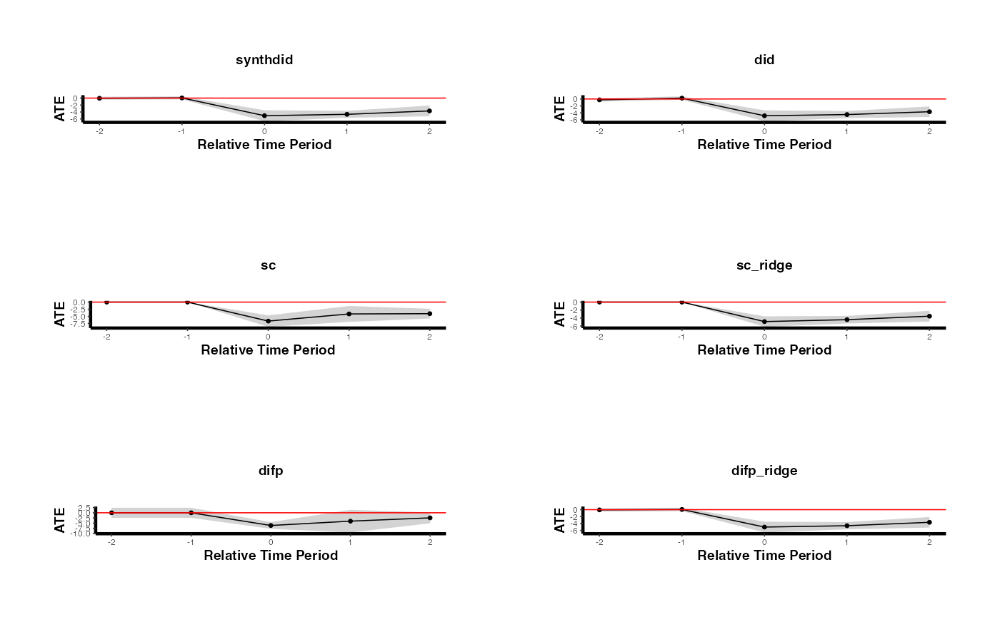

3. Synthetic Difference-in-Differences
Mike Nguyen
2026-03-17
b_synthdid.Rmd
library(causalverse)
knitr::opts_chunk$set(cache = TRUE)Theory and Background
Overview
Synthetic Difference-in-Differences (SynthDID) is a causal inference method introduced by Arkhangelsky et al. (2021) that combines the strengths of two well-established approaches: Synthetic Control (SC) and Difference-in-Differences (DID). The key insight is that by combining unit weights (from SC) with time weights (a new addition), SynthDID achieves double robustness properties and improved efficiency over either method alone.
Mathematical Formulation
Consider a balanced panel with units observed over time periods. Among these, units are controls (never treated) and units receive treatment starting at period . Let denote the observed outcome for unit at time .
The SynthDID estimator solves the following optimization problem:
where:
- is the treatment indicator (equals 1 if unit is treated at time , 0 otherwise),
- are unit weights that make the weighted average of control units approximate the treated units in the pre-treatment period,
- are time weights that make the weighted average of pre-treatment periods approximate the post-treatment periods for control units,
- and are unit and time fixed effects.
In practice, the estimator can be written in a more compact “double-differencing” form:
where is the average outcome of treated units in the post-treatment period, and the -superscript denotes a time-weighted average over pre-treatment periods.
Unit Weights ()
The unit weights are chosen to minimize the discrepancy between the weighted combination of control units and the treated units in the pre-treatment period. Specifically, they solve:
where is the simplex (non-negative weights that sum to one), and is a regularization parameter. The intercept is a key difference from standard SC—it allows for a level shift, which connects SynthDID to DID.
Time Weights ()
Time weights are unique to SynthDID and not present in standard SC or DID. They solve:
These time weights focus the comparison on pre-treatment periods that are most informative for predicting post-treatment outcomes among control units. Periods that are more similar to post-treatment periods receive higher weight.
Comparison with SC and DID
The SynthDID framework nests both SC and DID as special cases:
| Method | Unit Weights () | Time Weights () | Intercept |
|---|---|---|---|
| DID | Uniform () | Uniform () | Yes (implicit) |
| SC | Optimized (no intercept) | Zero (only uses levels) | No |
| SynthDID | Optimized (with intercept) | Optimized | Yes |
- DID assumes parallel trends and weights all control units and pre-treatment periods equally. It is valid when the parallel trends assumption holds but can be biased otherwise.
- SC constructs a synthetic control by weighting donor units to match the treated unit’s pre-treatment trajectory in levels. It does not difference, so it relies on a good level match.
- SynthDID combines both approaches. By using optimized unit weights (like SC) and optimized time weights plus an intercept (like DID), it achieves a form of “double robustness”: it remains consistent if either the SC-style level match or the DID-style parallel trends assumption approximately holds.
Assumptions
The formal assumptions underlying SynthDID include:
No anticipation: Treatment has no effect before the treatment period. Units do not change behavior in anticipation of treatment.
SUTVA (Stable Unit Treatment Value Assumption): The potential outcomes for any unit are unaffected by the treatment assignment of other units (no spillovers), and there is only one version of treatment.
Approximate factor model: Outcomes follow an approximate factor model structure: where are time fixed effects, are unit-specific factor loadings, are common factors, and are idiosyncratic errors.
Regularity conditions: The number of pre-treatment periods and control units must grow, and the error terms must satisfy certain mixing and moment conditions for asymptotic inference.
Overlap in pre-treatment outcomes: The pre-treatment trajectory of treated units must lie approximately within the convex hull of control units’ trajectories (similar to SC).
A key advantage of SynthDID over pure DID is that it relaxes the strict parallel trends assumption. Instead, it requires only that the weighted combination of control units (after double-differencing) approximates the treated units’ counterfactual trajectory.
Synthetic DID
Block Adoption (Assignment)
This section contains the code from the synthdid package (Arkhangelsky et al. 2021), which can handle block adoption (i.e., when all units are treated at the same time).
library(synthdid)
# Estimate the effect of California Proposition 99 on cigarette consumption
data('california_prop99')
setup = synthdid::panel.matrices(synthdid::california_prop99)
tau.hat = synthdid::synthdid_estimate(setup$Y, setup$N0, setup$T0)
print(summary(tau.hat))
#> $estimate
#> [1] -15.60383
#>
#> $se
#> [,1]
#> [1,] NA
#>
#> $controls
#> estimate 1
#> Nevada 0.124
#> New Hampshire 0.105
#> Connecticut 0.078
#> Delaware 0.070
#> Colorado 0.058
#> Illinois 0.053
#> Nebraska 0.048
#> Montana 0.045
#> Utah 0.042
#> New Mexico 0.041
#> Minnesota 0.039
#> Wisconsin 0.037
#> West Virginia 0.034
#> North Carolina 0.033
#> Idaho 0.031
#> Ohio 0.031
#> Maine 0.028
#> Iowa 0.026
#>
#> $periods
#> estimate 1
#> 1988 0.427
#> 1986 0.366
#> 1987 0.206
#>
#> $dimensions
#> N1 N0 N0.effective T1 T0 T0.effective
#> 1.000 38.000 16.388 12.000 19.000 2.783
# for only one treated unit, we can only use the placebo method
# se = sqrt(vcov(tau.hat, method='placebo'))
# sqrt(vcov(tau.hat, method='bootstrap'))
# sqrt(vcov(tau.hat, method='jackknife'))
# sprintf('point estimate: %1.2f', tau.hat)
# sprintf('95%% CI (%1.2f, %1.2f)', tau.hat - 1.96 * se, tau.hat + 1.96 * se)
synthdid::synthdid_plot(tau.hat) + ama_theme()
#> Warning: Using `size` aesthetic for lines was deprecated in ggplot2 3.4.0.
#> ℹ Please use `linewidth` instead.
#> ℹ The deprecated feature was likely used in the synthdid package.
#> Please report the issue at
#> <https://github.com/synth-inference/synthdid/issues>.
#> This warning is displayed once per session.
#> Call `lifecycle::last_lifecycle_warnings()` to see where this warning was
#> generated.
Using fixest dataset
library(fixest)
library(dplyr)
#>
#> Attaching package: 'dplyr'
#> The following objects are masked from 'package:stats':
#>
#> filter, lag
#> The following objects are masked from 'package:base':
#>
#> intersect, setdiff, setequal, union
library(ggplot2)If you want to use the base_stagg dataset, you have to choose just 1 period, because function synthdid_estimate cannot handle staggered adoption.
df_stagg <- fixest::base_stagg |>
dplyr::filter(year_treated %in% c(10000, 8)) |>
dplyr::transmute(
id = as.factor(id),
year = as.integer(year),
y = as.double(y),
treated = as.integer(if_else(time_to_treatment >= 0, 1, 0))
)
head(df_stagg)
#> id year y treated
#> 1 84 1 -1.5837825 0
#> 2 81 1 1.7723144 0
#> 3 80 1 -0.7819864 0
#> 4 79 1 -4.7819034 0
#> 5 78 1 -8.6996118 0
#> 6 77 1 1.6714719 0
setup_stagg = df_stagg |>
# specify column names
synthdid::panel.matrices(
unit = "id",
time = "year",
outcome = "y",
treatment = "treated"
)
head(fixest::base_did)
#> y x1 id period post treat
#> 1 2.87530627 0.5365377 1 1 0 1
#> 2 1.86065272 -3.0431894 1 2 0 1
#> 3 0.09416524 5.5768439 1 3 0 1
#> 4 3.78147485 -2.8300587 1 4 0 1
#> 5 -2.55819959 -5.0443544 1 5 0 1
#> 6 1.72873240 -0.6363849 1 6 1 1
df = fixest::base_did |>
mutate(
id = as.factor(id),
period = as.integer(period),
y = as.double(y),
post = as.integer(post)
) |>
# correct treatment
mutate(treatment = as.integer(if_else(treat == 0, 0, post)))
setup <- df |>
synthdid::panel.matrices(
unit = "id",
time = "period",
outcome = "y",
treatment = "treatment"
)
tau.hat = synthdid::synthdid_estimate(setup$Y, setup$N0, setup$T0)
tau.hat
#> synthdid: 4.828 +- 1.025. Effective N0/N0 = 52.4/53~1.0. Effective T0/T0 = 4.6/5~0.9. N1,T1 = 55,5.
# sqrt(vcov(tau.hat, method='bootstrap'))
sqrt(vcov(tau.hat, method='jackknife'))
#> [,1]
#> [1,] 0.5228316
# to use this SE method, must have more controls than treated units
# can try the base_stagg dataset from above
# sqrt(vcov(tau.hat, method='placebo'))
# Comparing counterfactual estimate to real-world observation
synthdid::synthdid_plot(tau.hat
# , se.method = "placebo"
) + ama_theme()
# Control unit contribution plot (black is the ATE, grey lines are CIs)
synthdid::synthdid_units_plot(tau.hat) + ama_theme(base_size = 8)
# pre-treatment parallel trends
# synthdid::synthdid_plot(tau.hat, overlay = 1)
# synthdid::synthdid_plot(tau.hat, overlay = .8)
# synthdid::synthdid_placebo_plot(tau.hat)
# synthdid::synthdid_rmse_plot(tau.hat)Incorporating Covariates (Residualization)
The standard SynthDID estimator operates on a single outcome variable and does not directly accept covariates. However, time-varying covariates can be incorporated through a residualization approach: first regress the outcome on covariates, then apply SynthDID to the residuals.
Why Use Covariates?
Covariates can improve SynthDID estimation in several ways:
- Improved pre-treatment fit: By removing variation explained by observables, the residualized outcome may be easier to match across treated and control units.
- Reduced bias: If covariates are correlated with both treatment assignment and outcomes, including them reduces omitted variable bias.
- Increased precision: Removing covariate-driven variation reduces noise, leading to tighter standard errors.
The Residualization Approach
To incorporate time-varying elements into the unit and time weights of the synthdid, consider using residuals obtained from regressing observed outcomes against time-varying variables. This can be expressed as:
where is derived from the regression equation .
The steps are:
- Regress the outcome on covariates (pooling all units and time periods).
- Extract the residuals.
- Apply SynthDID to the residuals as the new outcome.
Single Covariate Example
setup2 <- df |>
dplyr::mutate(y_res = residuals(lm(y ~ x1))) |>
synthdid::panel.matrices(
unit = "id",
time = "period",
outcome = "y_res",
treatment = "treatment"
)
tau.hat2 = synthdid::synthdid_estimate(setup2$Y, setup2$N0, setup2$T0)
tau.hat2
#> synthdid: 4.850 +- 0.923. Effective N0/N0 = 52.5/53~1.0. Effective T0/T0 = 4.6/5~0.9. N1,T1 = 55,5.Multiple Covariates
When multiple covariates are available, simply include them in the regression:
# Example with multiple covariates
# base_did only has x1, so we demonstrate with x1 (extend similarly for x2, x3, etc.)
df_multi <- df |>
dplyr::mutate(y_res = residuals(lm(y ~ x1)))
setup_multi <- df_multi |>
synthdid::panel.matrices(
unit = "id",
time = "period",
outcome = "y_res",
treatment = "treatment"
)
tau_multi = synthdid::synthdid_estimate(setup_multi$Y, setup_multi$N0, setup_multi$T0)
tau_multi
#> synthdid: 4.850 +- 0.923. Effective N0/N0 = 52.5/53~1.0. Effective T0/T0 = 4.6/5~0.9. N1,T1 = 55,5.Important Considerations for Residualization
When using the residualization approach, keep the following in mind:
- Use pre-treatment data only for the regression (ideally). Running the regression on all data including post-treatment periods may introduce post-treatment bias if the treatment affects the covariates. A conservative approach is:
# Conservative approach: estimate beta from pre-treatment data only
beta_pre <- lm(y ~ x1, data = df |> dplyr::filter(post == 0))
df$y_res_conservative <- df$y - predict(beta_pre, newdata = df)
head(df[, c("id", "period", "y", "y_res_conservative")])
#> id period y y_res_conservative
#> 1 1 1 2.87530627 2.060713
#> 2 1 2 1.86065272 4.562316
#> 3 1 3 0.09416524 -5.671367
#> 4 1 4 3.78147485 6.273786
#> 5 1 5 -2.55819959 2.109147
#> 6 1 6 1.72873240 2.066265Do not include treatment-affected covariates: If a covariate is itself affected by the treatment (a “bad control” or mediator), including it will bias the treatment effect estimate.
Unit and time fixed effects: If the covariates include unit-specific or time-specific means, consider whether these overlap with the fixed effects already implicit in SynthDID.
Comparing with and without covariates: It is good practice to report results both with and without covariate adjustment. If results are similar, this provides additional confidence in robustness.
tau.sc = synthdid::sc_estimate(setup$Y, setup$N0, setup$T0)
tau.did = synthdid::did_estimate(setup$Y, setup$N0, setup$T0)
estimates = list(tau.did, tau.sc, tau.hat)
names(estimates) = c('Diff-in-Diff', 'Synthetic Control', 'Synthetic Diff-in-Diff')
print(unlist(estimates))
#> Diff-in-Diff Synthetic Control Synthetic Diff-in-Diff
#> 4.993390 4.475815 4.827761
synthdid::synthdid_plot(estimates) +
ama_theme()
Spaghetti plots
top.controls = synthdid::synthdid_controls(tau.hat)[1:10, , drop=FALSE]
synthdid::synthdid_plot(tau.hat, spaghetti.units=rownames(top.controls)) + ama_theme()
synthdid::synthdid_units_plot(estimates) +
ama_theme()
synthdid::synthdid_units_plot(tau.hat, units = rownames(top.controls)) + ama_theme()
Diagnostics
Good practice requires inspecting the quality of the synthetic control fit before interpreting treatment effect estimates. This section demonstrates several diagnostic tools available in the synthdid package.
Inspecting Unit Weights
The synthdid_controls() function returns the unit weights assigned to each control unit. Examining these weights helps understand which control units contribute most to the synthetic control.
# Get all unit weights
unit_weights <- synthdid::synthdid_controls(tau.hat)
# Display top contributing control units
head(unit_weights, 10)
#> estimate 1
#> 74 0.02410098
#> 89 0.02270290
#> 91 0.02225061
#> 57 0.02183605
#> 85 0.02128654
#> 70 0.02102706
#> 104 0.02095126
#> 62 0.02090213
#> 76 0.02082322
#> 64 0.02076289
# How many controls have non-negligible weight?
cat("Number of controls with weight > 0.01:",
sum(unit_weights > 0.01), "\n")
#> Number of controls with weight > 0.01: 47
cat("Total weight on top 5 controls:",
sum(sort(unit_weights, decreasing = TRUE)[1:5]), "\n")
#> Total weight on top 5 controls: 0.1121771A well-behaved SynthDID estimate typically places non-trivial weight on a relatively small number of control units, producing a sparse and interpretable synthetic control.
Pre-Treatment Fit Assessment
Evaluating how well the synthetic control matches the treated unit(s) in the pre-treatment period is essential. A poor pre-treatment fit suggests the synthetic control may not provide a reliable counterfactual.
# Overlay plot: shows treated vs synthetic in pre-treatment
# overlay = 1 means full overlap in display
synthdid::synthdid_plot(tau.hat, overlay = 1) +
ama_theme() +
ggplot2::ggtitle("Pre-treatment Fit: Treated vs. Synthetic Control")
The overlay parameter controls the degree of visual overlap between treated and synthetic trajectories. A value of 1 maximizes overlap, making it easier to assess pre-treatment fit. Values between 0 and 1 provide partial overlay.
# Partial overlay for alternative visualization
synthdid::synthdid_plot(tau.hat, overlay = 0.8) +
ama_theme() +
ggplot2::ggtitle("Partial Overlay (0.8)")
Placebo and RMSE Diagnostics
The synthdid_placebo_plot() function performs placebo tests by iteratively treating each control unit as if it were treated. If the method is working well, the placebo effects should be centered around zero, and the true treatment effect should stand out.
synthdid::synthdid_placebo_plot(tau.hat) +
ama_theme() +
ggplot2::ggtitle("Placebo Test: Distribution of Placebo Effects")
The synthdid_rmse_plot() function displays the root mean squared error of the pre-treatment fit for the treated unit relative to placebo fits for control units.
synthdid::synthdid_rmse_plot(tau.hat) +
ama_theme() +
ggplot2::ggtitle("RMSE Diagnostic Plot")
If the treated unit’s pre-treatment RMSE is substantially larger than the placebo units’ RMSE values, this indicates a poor pre-treatment fit and the results should be interpreted with caution.
Comparing Diagnostics Across Estimators
It can also be informative to compare diagnostic plots across DID, SC, and SynthDID to understand how each method constructs its counterfactual.
# Recall: estimates list was created earlier
# estimates = list(tau.did, tau.sc, tau.hat)
synthdid::synthdid_plot(estimates, overlay = 1) +
ama_theme() +
ggplot2::ggtitle("Pre-treatment Fit Across Estimators")
Standard Errors and Inference
Inference for SynthDID requires special methods because the weights are estimated from the data. The synthdid package provides three approaches for computing standard errors, each with different properties and applicability.
Placebo Method
The placebo method computes standard errors by iteratively reassigning treatment to control units. For each placebo iteration, a control unit is treated as if it received the treatment, and the SynthDID estimator is recomputed on the remaining controls. The standard deviation of these placebo estimates provides the standard error.
When to use: The placebo method is preferred when there is only one treated unit (as in the California Proposition 99 example). It requires that the number of control units exceeds the number of treated units ().
setup_ca = synthdid::panel.matrices(synthdid::california_prop99)
tau_ca = synthdid::synthdid_estimate(setup_ca$Y, setup_ca$N0, setup_ca$T0)
# Placebo SE (works with single treated unit)
se_placebo = sqrt(vcov(tau_ca, method = 'placebo'))
cat("Placebo SE:", round(se_placebo, 3), "\n")
#> Placebo SE: 10.988
cat("95% CI: (", round(tau_ca - 1.96 * se_placebo, 2), ",",
round(tau_ca + 1.96 * se_placebo, 2), ")\n")
#> 95% CI: ( -37.14 , 5.93 )The causalverse package provides synthdid_se_placebo(), which extends the placebo method to compute per-period standard errors, useful for examining how uncertainty varies across post-treatment periods.
# Per-period placebo SE using causalverse
se_per_placebo <- causalverse::synthdid_se_placebo(tau_ca, replications = 500)
print(se_per_placebo)
#> [1] 0.0000000 0.0000000 0.0000000 0.0000000 0.0000000 0.0000000
#> [7] 0.0000000 0.0000000 0.0000000 0.0000000 0.0000000 0.0000000
#> [13] 0.0000000 0.0000000 0.0000000 0.0000000 0.9753081 0.6982304
#> [19] 1.1515451 3.6942604 8.1181143 8.9459650 9.9971758 10.1986216
#> [25] 11.5297336 12.4457975 12.7908651 13.6441388 12.6979526 13.4358033
#> [31] 13.9389997 3.6942604 5.4551748 6.2090102 6.9327953 7.4077444
#> [37] 7.8063416 8.2300288 8.5699643 8.8712930 9.0372998 9.2210960
#> [43] 9.4440224Jackknife Method
The jackknife method estimates variance by systematically leaving out one unit at a time and recomputing the estimate. This is the leave-one-out approach commonly used in statistics.
When to use: The jackknife method requires more than one treated unit. When there is only one treated unit, causalverse::synthdid_se_jacknife() automatically falls back to the placebo method.
# Jackknife SE (requires multiple treated units)
# Using base_did which has multiple treated units
se_jack = sqrt(vcov(tau.hat, method = 'jackknife'))
cat("Jackknife SE:", round(se_jack, 3), "\n")
#> Jackknife SE: 0.523The causalverse package provides synthdid_se_jacknife(), which extends the standard jackknife to produce per-period standard errors:
# Per-period jackknife SE using causalverse
se_per_jack <- causalverse::synthdid_se_jacknife(tau.hat)
print(se_per_jack)
#> [1] 0.1693245 0.1566397 0.2301585 0.1284699 0.1639381 0.8780495 0.9689758
#> [8] 1.1750561 0.9525326 1.1468373 0.8780495 0.6799381 0.6388343 0.5293119
#> [15] 0.5228316Bootstrap Method
The bootstrap method resamples control units with replacement and recomputes the estimate for each bootstrap sample.
When to use: Bootstrap can be used as an alternative to the jackknife when there are multiple treated units. It is generally more computationally intensive but can be more robust in finite samples.
Comparison of SE Methods
The table below summarizes the properties of each inference method:
| Method | Min. Treated Units | Requirement | Computational Cost | Per-Period |
|---|---|---|---|---|
| Placebo | 1 | Moderate | Yes (via causalverse) |
|
| Jackknife | 2+ (fallback to placebo if 1) | None | Low | Yes (via causalverse) |
| Bootstrap | 2+ | None | High | No (standard) |
Constructing Confidence Intervals
Once standard errors are obtained, confidence intervals can be constructed in the usual way:
For a 95% confidence interval, .
cat("=== Comparison of SE Methods (base_did data) ===\n")
#> === Comparison of SE Methods (base_did data) ===
cat("Point estimate:", round(as.numeric(tau.hat), 3), "\n\n")
#> Point estimate: 4.828
cat("Jackknife SE:", round(se_jack, 3), "\n")
#> Jackknife SE: 0.523
cat(" 95% CI: (", round(as.numeric(tau.hat) - 1.96 * se_jack, 2), ",",
round(as.numeric(tau.hat) + 1.96 * se_jack, 2), ")\n\n")
#> 95% CI: ( 3.8 , 5.85 )
cat("Bootstrap SE:", round(se_boot, 3), "\n")
#> Bootstrap SE: 0.568
cat(" 95% CI: (", round(as.numeric(tau.hat) - 1.96 * se_boot, 2), ",",
round(as.numeric(tau.hat) + 1.96 * se_boot, 2), ")\n")
#> 95% CI: ( 3.71 , 5.94 )Multiple Estimators with panel_estimate()
The causalverse::panel_estimate() function provides a unified interface for computing treatment effect estimates using multiple methods simultaneously. This is valuable for assessing the robustness of findings across different identifying assumptions.
Available Estimators
The package supports the following estimators:
| Estimator | Function | Description |
|---|---|---|
synthdid |
synthdid::synthdid_estimate() |
Synthetic Difference-in-Differences: combines unit weights, time weights, and an intercept. |
did |
synthdid::did_estimate() |
Standard Difference-in-Differences: uniform weights on all control units and all pre-treatment periods. |
sc |
synthdid::sc_estimate() |
Synthetic Control: optimized unit weights with no intercept and no time weights. |
sc_ridge |
Custom wrapper | SC with ridge-regularized unit weights. Regularization parameter scales as . |
difp |
Custom wrapper | De-meaned SynthDID: uses uniform time weights () with SynthDID-style unit weights. |
difp_ridge |
Custom wrapper | DIFP with ridge regularization on unit weights. |
Running All Estimators
setup = synthdid::panel.matrices(synthdid::california_prop99)
# Run for specific estimators
results_selected = causalverse::panel_estimate(
setup,
selected_estimators = c("synthdid", "did", "sc")
)
results_selected
#> $synthdid
#> $synthdid$estimate
#> synthdid: -15.604 +- NA. Effective N0/N0 = 16.4/38~0.4. Effective T0/T0 = 2.8/19~0.1. N1,T1 = 1,12.
#>
#> $synthdid$std.error
#> [1] 10.05324
#>
#>
#> $did
#> $did$estimate
#> synthdid: -27.349 +- NA. Effective N0/N0 = 38.0/38~1.0. Effective T0/T0 = 19.0/19~1.0. N1,T1 = 1,12.
#>
#> $did$std.error
#> [1] 15.81479
#>
#>
#> $sc
#> $sc$estimate
#> synthdid: -19.620 +- NA. Effective N0/N0 = 3.8/38~0.1. Effective T0/T0 = Inf/19~Inf. N1,T1 = 1,12.
#>
#> $sc$std.error
#> [1] 11.16422
# to access more details in the estimate object
summary(results_selected$did$estimate)
#> $estimate
#> [1] -27.34911
#>
#> $se
#> [,1]
#> [1,] NA
#>
#> $controls
#> estimate 1
#> Wyoming 0.026
#> Wisconsin 0.026
#> West Virginia 0.026
#> Virginia 0.026
#> Vermont 0.026
#> Utah 0.026
#> Texas 0.026
#> Tennessee 0.026
#> South Dakota 0.026
#> South Carolina 0.026
#> Rhode Island 0.026
#> Pennsylvania 0.026
#> Oklahoma 0.026
#> Ohio 0.026
#> North Dakota 0.026
#> North Carolina 0.026
#> New Mexico 0.026
#> New Hampshire 0.026
#> Nevada 0.026
#> Nebraska 0.026
#> Montana 0.026
#> Missouri 0.026
#> Mississippi 0.026
#> Minnesota 0.026
#> Maine 0.026
#> Louisiana 0.026
#> Kentucky 0.026
#> Kansas 0.026
#> Iowa 0.026
#> Indiana 0.026
#> Illinois 0.026
#> Idaho 0.026
#> Georgia 0.026
#> Delaware 0.026
#> Connecticut 0.026
#>
#> $periods
#> estimate 1
#> 1988 0.053
#> 1987 0.053
#> 1986 0.053
#> 1985 0.053
#> 1984 0.053
#> 1983 0.053
#> 1982 0.053
#> 1981 0.053
#> 1980 0.053
#> 1979 0.053
#> 1978 0.053
#> 1977 0.053
#> 1976 0.053
#> 1975 0.053
#> 1974 0.053
#> 1973 0.053
#> 1972 0.053
#> 1971 0.053
#>
#> $dimensions
#> N1 N0 N0.effective T1 T0 T0.effective
#> 1 38 38 12 19 19
process_panel_estimate(results_selected)
#> Method Estimate SE
#> 1 SYNTHDID -15.60 10.05
#> 2 DID -27.35 15.81
#> 3 SC -19.62 11.16Now run all six estimators (excluding mc which requires the MCPanel package):
# Run all available estimators
results_all = causalverse::panel_estimate(
setup,
selected_estimators = c("synthdid", "did", "sc", "sc_ridge", "difp", "difp_ridge")
)
# Format results into a clean table
results_table <- causalverse::process_panel_estimate(results_all)
results_table
#> Method Estimate SE
#> 1 SYNTHDID -15.60 10.05
#> 2 DID -27.35 15.81
#> 3 SC -19.62 11.16
#> 4 SC_RIDGE -21.72 11.30
#> 5 DIFP -11.10 10.19
#> 6 DIFP_RIDGE -16.12 10.17Interpreting the Results
When comparing across estimators:
- If all methods agree, this provides strong evidence for the treatment effect, as it is robust to different identifying assumptions.
- If DID and SynthDID agree but SC differs, this suggests that level matching (SC) is difficult but the parallel trends assumption may hold.
- If SC and SynthDID agree but DID differs, this suggests that parallel trends may be violated, but there is a good level match among weighted control units.
- If methods disagree substantially, investigate the assumptions of each method carefully and rely on the one whose assumptions are most plausible in your context.
Visualizing Estimator Comparison
# Create estimates for plotting
tau.sc_ca = synthdid::sc_estimate(setup$Y, setup$N0, setup$T0)
tau.did_ca = synthdid::did_estimate(setup$Y, setup$N0, setup$T0)
tau.sdid_ca = synthdid::synthdid_estimate(setup$Y, setup$N0, setup$T0)
estimates_ca = list(tau.did_ca, tau.sc_ca, tau.sdid_ca)
names(estimates_ca) = c('DID', 'SC', 'SynthDID')
synthdid::synthdid_plot(estimates_ca) +
ama_theme() +
ggplot2::ggtitle("California Prop 99: Comparing Estimators")
Per-Period Treatment Effects
While the overall ATT provides a single summary of the treatment effect, researchers are often interested in how the effect evolves over time. The causalverse::synthdid_est_per() function decomposes the SynthDID estimate into per-period treatment effects.
Decomposing Effects by Period
The per-period estimator computes, for each post-treatment period :
where is the synthetic control prediction for period using the estimated unit and time weights.
# Using the base_did setup from earlier
sdid_est <- synthdid::synthdid_estimate(setup$Y, setup$N0, setup$T0)
# Compute per-period effects
per_period <- causalverse::synthdid_est_per(
Y = setup$Y,
N0 = setup$N0,
T0 = setup$T0,
weights = attr(sdid_est, 'weights')
)
# View the structure
cat("Treatment effects by period:\n")
#> Treatment effects by period:
print(round(per_period$est, 3))
#> [1] 0.000 0.000 0.000 0.000 0.000 0.000 0.000 0.000 0.000
#> [10] 0.000 0.000 0.000 0.000 0.000 0.000 0.000 0.409 0.039
#> [19] -0.448 -4.845 -4.326 -8.654 -8.419 -12.545 -16.106 -18.906 -19.350
#> [28] -20.884 -22.782 -25.945 -24.485 -4.845 -4.585 -5.941 -6.561 -7.758
#> [37] -9.149 -10.543 -11.644 -12.671 -13.682 -14.796 -15.604
cat("\nNumber of treated units:", per_period$Ntr, "\n")
#>
#> Number of treated units: 1
cat("Number of control units:", per_period$Nco, "\n")
#> Number of control units: 38The output includes:
-
est: A vector of treatment effects for each period (pre-treatment periods should be near zero), followed by cumulative ATEs for post-treatment periods. -
y_obs: Observed (weighted) outcomes for treated units. -
y_pred: Predicted counterfactual outcomes for treated units. -
lambda.synth: The time weights used. -
NtrandNco: Counts of treated and control units.
Visualizing Per-Period Effects
# Extract post-treatment effects
T0_ca <- setup$T0
T_total <- ncol(setup$Y)
T1_ca <- T_total - T0_ca
# The first T_total elements are per-period, remaining are cumulative ATEs
per_period_effects <- per_period$est[1:T_total]
post_effects <- per_period_effects[(T0_ca + 1):T_total]
# Create a plot of per-period effects
effect_df <- data.frame(
Period = (T0_ca + 1):T_total,
Effect = post_effects
)
ggplot2::ggplot(effect_df, ggplot2::aes(x = Period, y = Effect)) +
ggplot2::geom_point(size = 3) +
ggplot2::geom_line() +
ggplot2::geom_hline(yintercept = 0, linetype = "dashed", color = "gray50") +
ggplot2::geom_hline(
yintercept = as.numeric(sdid_est),
linetype = "dotted",
color = "blue"
) +
ggplot2::labs(
x = "Time Period",
y = "Treatment Effect",
title = "Per-Period Treatment Effects (SynthDID)",
subtitle = "Blue dotted line = overall ATT"
) +
ama_theme()
Staggered Adoptions
This vignette adapts the block assignment method from Arkhangelsky et al. (2021) for staggered adoption scenarios. Following the approach suggested by Ben-Michael, Feller, and Rothstein (2022), separate assignment matrices are created for each treatment period to fit the block assignment context. The synthdid estimator is then applied to each sub-sample. Finally, the Average Treatment Effect on the Treated (ATT) is calculated as a weighted average of all ATTs for all treated periods, with weights based on the proportion of treated units in each time period for each sub-sample.
library(dplyr)
library(ggplot2)
library(fixest)
df <- fixest::base_stagg |>
dplyr::mutate(treatvar = if_else(time_to_treatment >= 0, 1, 0)) |>
dplyr::mutate(treatvar = as.integer(if_else(year_treated > (5 + 2), 0, treatvar)))
est <- causalverse::synthdid_est_ate(
data = df,
adoption_cohorts = 5:7,
lags = 2,
leads = 2,
time_var = "year",
unit_id_var = "id",
treated_period_var = "year_treated",
treat_stat_var = "treatvar",
outcome_var = "y",
)
#> Adoption Cohort: 5
#> Treated units: 5 Control units: 65
#> Adoption Cohort: 6
#> Treated units: 5 Control units: 60
#> Adoption Cohort: 7
#> Treated units: 5 Control units: 55
data.frame(
Period = names(est$TE_mean_w),
ATE = est$TE_mean_w,
SE = est$SE_mean_w
) |>
causalverse::nice_tab()
#> Period ATE SE
#> 1 -2 -0.05 0.22
#> 2 -1 0.05 0.22
#> 3 0 -5.07 0.80
#> 4 1 -4.68 0.51
#> 5 2 -3.70 0.79
#> 6 cumul.0 -5.07 0.80
#> 7 cumul.1 -4.87 0.55
#> 8 cumul.2 -4.48 0.53
causalverse::synthdid_plot_ate(est)
Compare to different estimators (e.g., DID and SC)
methods <- c("synthdid", "did", "sc", "sc_ridge", "difp", "difp_ridge")
estimates_methods <- lapply(methods, function(method) {
causalverse::synthdid_est_ate(
data = df,
adoption_cohorts = 5:7,
lags = 2,
leads = 2,
time_var = "year",
unit_id_var = "id",
treated_period_var = "year_treated",
treat_stat_var = "treatvar",
outcome_var = "y",
method = method
)
})
#> Adoption Cohort: 5
#> Treated units: 5 Control units: 65
#> Adoption Cohort: 6
#> Treated units: 5 Control units: 60
#> Adoption Cohort: 7
#> Treated units: 5 Control units: 55
#> Adoption Cohort: 5
#> Treated units: 5 Control units: 65
#> Adoption Cohort: 6
#> Treated units: 5 Control units: 60
#> Adoption Cohort: 7
#> Treated units: 5 Control units: 55
#> Adoption Cohort: 5
#> Treated units: 5 Control units: 65
#> Adoption Cohort: 6
#> Treated units: 5 Control units: 60
#> Adoption Cohort: 7
#> Treated units: 5 Control units: 55
#> Adoption Cohort: 5
#> Treated units: 5 Control units: 65
#> Adoption Cohort: 6
#> Treated units: 5 Control units: 60
#> Adoption Cohort: 7
#> Treated units: 5 Control units: 55
#> Adoption Cohort: 5
#> Treated units: 5 Control units: 65
#> Adoption Cohort: 6
#> Treated units: 5 Control units: 60
#> Adoption Cohort: 7
#> Treated units: 5 Control units: 55
#> Adoption Cohort: 5
#> Treated units: 5 Control units: 65
#> Adoption Cohort: 6
#> Treated units: 5 Control units: 60
#> Adoption Cohort: 7
#> Treated units: 5 Control units: 55
plots <- lapply(seq_along(estimates_methods), function(i) {
causalverse::synthdid_plot_ate(estimates_methods[[i]],
title = methods[i],
theme = causalverse::ama_theme(base_size = 6))
})
gridExtra::grid.arrange(grobs = plots, ncol = 2)
Subgroup Analysis (i.e., exploring treatment effects heterogeneity)
library(dplyr)
library(ggplot2)
est_sub <- causalverse::synthdid_est_ate(
data = df,
adoption_cohorts = 5:7,
lags = 2,
leads = 2,
time_var = "year",
unit_id_var = "id",
treated_period_var = "year_treated",
treat_stat_var = "treatvar",
outcome_var = "y",
# a vector of subgroup id (from unit id)
subgroup = c(
# some are treated
"11", "30", "49" ,
# some are control within this period
"20", "25", "21")
)
#> Adoption Cohort: 5
#> Treated units: 3 Control units: 65
#> Adoption Cohort: 6
#> Treated units: 0 Control units: 60
#> Adoption Cohort: 7
#> Treated units: 0 Control units: 55
data.frame(
Period = names(est_sub$TE_mean_w),
ATE = est_sub$TE_mean_w,
SE = est_sub$SE_mean_w
) |>
causalverse::nice_tab()
#> Period ATE SE
#> 1 -2 0.32 0.44
#> 2 -1 -0.32 0.44
#> 3 0 -4.29 1.68
#> 4 1 -4.00 1.52
#> 5 2 -3.44 2.90
#> 6 cumul.0 -4.29 1.68
#> 7 cumul.1 -4.14 1.52
#> 8 cumul.2 -3.91 1.82
causalverse::synthdid_plot_ate(est)
To incorporate time-varying variables, use the residuals obtained from regressing the outcome on these variables.
df_x <- fixest::base_stagg |>
dplyr::mutate(treatvar = if_else(time_to_treatment >= 0, 1, 0)) |>
dplyr::mutate(treatvar = as.integer(if_else(year_treated > (5 + 2), 0, treatvar))) |>
mutate(y_res = residuals(lm(y ~ x1)))
est_x <- causalverse::synthdid_est_ate(
data = df_x,
adoption_cohorts = 5:7,
lags = 2,
leads = 2,
time_var = "year",
unit_id_var = "id",
treated_period_var = "year_treated",
treat_stat_var = "treatvar",
outcome_var = "y_res"
)
#> Adoption Cohort: 5
#> Treated units: 5 Control units: 65
#> Adoption Cohort: 6
#> Treated units: 5 Control units: 60
#> Adoption Cohort: 7
#> Treated units: 5 Control units: 55
data.frame(
Period = names(est_x$TE_mean_w),
ATE = est_x$TE_mean_w,
SE = est_x$SE_mean_w
) |>
causalverse::nice_tab()
#> Period ATE SE
#> 1 -2 -0.04 0.11
#> 2 -1 0.04 0.11
#> 3 0 -5.54 0.43
#> 4 1 -4.48 0.38
#> 5 2 -3.22 0.30
#> 6 cumul.0 -5.54 0.43
#> 7 cumul.1 -5.01 0.36
#> 8 cumul.2 -4.41 0.29
causalverse::synthdid_plot_ate(est_x)
Best Practices and Practical Guidance
When to Use SynthDID vs. SC vs. DID
Choosing the right estimator depends on the features of your data and the plausibility of the identifying assumptions:
Use DID when:
- You have many treated and control units.
- The parallel trends assumption is credible (e.g., pre-treatment trends are visually parallel).
- Treatment is not concentrated in a single unit or a very small number of units.
- You want a simple, well-understood baseline estimate.
Use SC when:
- You have one or very few treated units (e.g., a single country, state, or firm).
- The treated unit’s pre-treatment outcome trajectory can be closely matched by a weighted combination of control units in levels.
- The number of pre-treatment periods is large relative to the number of control units.
- Parallel trends is implausible, but level matching is achievable.
Use SynthDID when:
- You want the benefits of both SC and DID without committing to one set of assumptions.
- You have a moderate number of treated units (one or more).
- You want double robustness: the estimator is consistent if either the SC-type or DID-type assumption holds.
- You want data-driven time weights that focus on the most informative pre-treatment periods.
Pre-Treatment Fit Assessment
Before reporting SynthDID results, always assess the quality of the pre-treatment fit:
Visual inspection: Use
synthdid_plot()withoverlay = 1to compare treated and synthetic trajectories in the pre-treatment period. They should track each other closely.RMSE check: Use
synthdid_rmse_plot()to compare the treated unit’s pre-treatment RMSE against placebo units. The treated unit’s RMSE should not be an outlier.Weight sparsity: Use
synthdid_controls()to inspect unit weights. A very diffuse weight distribution (many controls with small weights) may indicate a poor match.Placebo tests: Use
synthdid_placebo_plot()to check that the estimated effect is unusual compared to placebo effects. If many placebo effects are as large as the true effect, the result is not statistically compelling.
Reporting Guidelines
When reporting SynthDID results in academic papers or policy reports, include the following:
Point estimate and standard error: Report the ATT with at least one SE method. State which SE method was used and why.
Confidence interval: Report the 95% confidence interval.
Pre-treatment fit plot: Show the treated vs. synthetic control trajectory, including the pre-treatment period.
Unit weights: Report or visualize the control unit weights. Identify the top contributing control units.
Robustness across estimators: Report results from DID, SC, and SynthDID side by side. Discuss any discrepancies.
Sensitivity to specification: Consider varying the number of pre-treatment periods, the set of control units, or the covariate specification.
Placebo tests: Report the results of placebo tests (in-time or in-space placebos).
Staggered adoption: If treatment is staggered, clearly describe the cohort-by-cohort estimation strategy and how the overall ATT is aggregated.
Common Pitfalls
Avoid these common mistakes when applying SynthDID:
Too few pre-treatment periods: SynthDID requires sufficient pre-treatment data to estimate both unit and time weights reliably. As a rule of thumb, at least 10 pre-treatment periods are desirable.
Too few control units: With very few controls, the unit weights cannot achieve a good match and the placebo SE method will have low power.
Post-treatment covariates: Never residualize on variables that are themselves affected by the treatment.
Ignoring weight quality: Always inspect the unit and time weights. Extreme weights (e.g., all weight on a single control) suggest fragility.
Staggered adoption without adjustment: The base
synthdid_estimate()function assumes block adoption. For staggered designs, usecausalverse::synthdid_est_ate()which handles cohort-by-cohort estimation.Over-interpreting per-period effects: Per-period effects are noisier than the overall ATT. Focus on the overall pattern rather than individual period estimates unless you have theoretical reasons to expect time-varying effects.